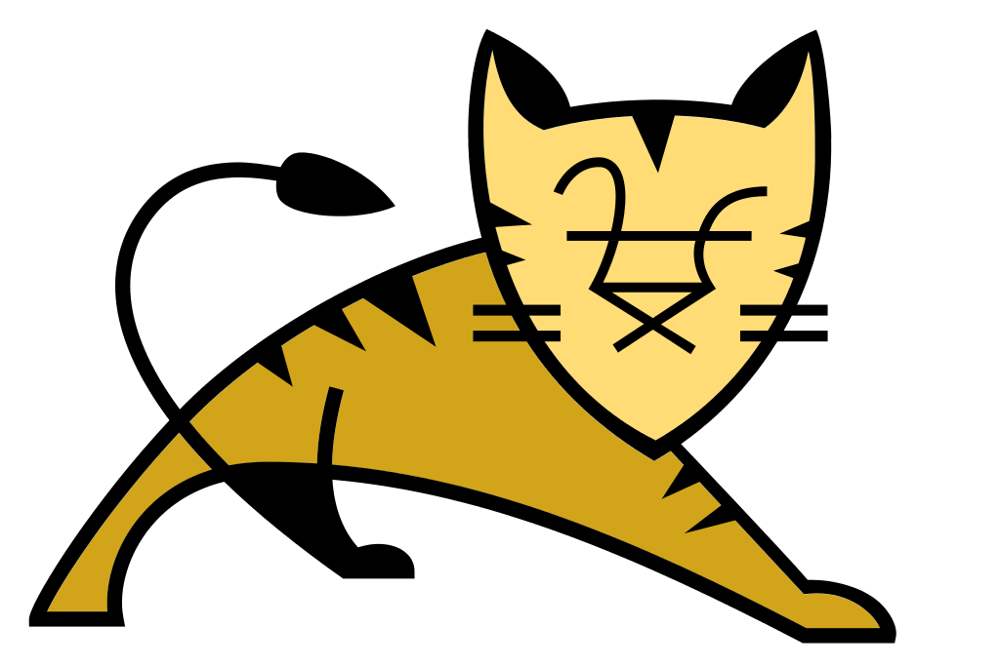

Oprogramowanie Apache Tomcat ® jest implementacją open source technologii Java Servlet, JavaServer Pages,
Java Expression Language i Java WebSocket. Java Servlet, JavaServer Pages,
Java Expression Language i Java WebSocket są opracowywane w ramach Java Community Process .
Oprogramowanie Apache Tomcat zostało opracowane w otwartym i partycypacyjnym środowisku
i wydane na podstawie licencji Apache w wersji 2 . Projekt Apache Tomcat ma być wynikiem współpracy
najlepszych programistów z całego świata. Zapraszamy do udziału w tym otwartym projekcie deweloperskim.
Twórca strony: © Andrzej Stefaniuk